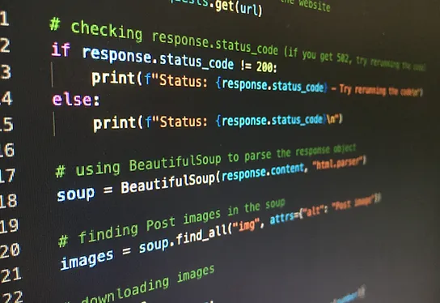
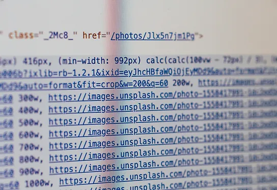

BC01 - Elaborer une proposition graphique. Maîtriser les problématiques liées aux risques informatiques. La sécurité informatique est cruciale pour protéger vos informations personnelles et professionnelles contre les cyber-attaques. Il est important de prendre des mesures de sécurité telles que la mise à jour régulière de vos logiciels, la sauvegarde de vos données et la sensibilisation aux menaces en ligne pour minimiser les risques de sécurité. En étant vigilant et en adoptant des pratiques sécurisées, vous pouvez protéger votre vie numérique et éviter les conséquences potentiellement graves d'une violation de la sécurité.
BC02 - Intervenir sur les éléments de l'infrastructure. La formation de technicien d'assistance en informatique vise à former des professionnels capables de résoudre les problèmes techniques rencontrés par les utilisateurs, d'installer et de configurer des systèmes informatiques, de fournir un support technique et de maintenir le bon fonctionnement des équipements et des logiciels. Elle couvre les bases de l'informatique, les réseaux, les systèmes d'exploitation et les outils de dépannage, et développe les compétences en communication pour assister efficacement les utilisateurs.
BC01 - Concevoir et développer des composants d'interface utilisateur en intégrant les recommandations de sécurité. La formation de concepteur développeur d'applications offre une polyvalence professionnelle en combinant compétences en conception et en développement. Vous maîtriserez les langages de programmation et les outils nécessaires pour créer des applications innovantes sur diverses plateformes. Cette formation favorise également une approche créative et analytique, vous permettant de concevoir des interfaces intuitives, de créer une architecture logicielle solide et de résoudre efficacement les problèmes techniques rencontrés lors du développement d'applications.
BC02 - Concevoir et développer la persistance des données en intégrant les recommandations de sécurité. La formation de concepteur développeur d'applications offre une polyvalence professionnelle en combinant compétences en conception et en développement. Vous maîtriserez les langages de programmation et les outils nécessaires pour créer des applications innovantes sur diverses plateformes. Cette formation favorise également une approche créative et analytique, vous permettant de concevoir des interfaces intuitives, de créer une architecture logicielle solide et de résoudre efficacement les problèmes techniques rencontrés lors du développement d'applications.
BC03 - Concevoir et développer une application multicouche répartie en intégrant les recommandations de sécurité. La formation de concepteur développeur d'applications offre une polyvalence professionnelle en combinant compétences en conception et en développement. Vous maîtriserez les langages de programmation et les outils nécessaires pour créer des applications innovantes sur diverses plateformes. Cette formation favorise également une approche créative et analytique, vous permettant de concevoir des interfaces intuitives, de créer une architecture logicielle solide et de résoudre efficacement les problèmes techniques rencontrés lors du développement d'applications.
BC01 - Développer la partie front-end d'une application web ou web mobile en intégrant les recommandations de sécurité. La formation de développeur web et web mobile vous permettra de créer des sites web et des applications mobiles conviviales et interactives. Vous maîtriserez les langages de programmation tels que HTML, CSS et JavaScript, ainsi que les frameworks et outils populaires du développement web. Cette formation met l'accent sur la conception d'interfaces attrayantes et réactives, ainsi que sur l'optimisation des performances et l'expérience utilisateur. Avec une forte demande de développeurs web et web mobile, cette formation offre de nombreuses opportunités d'emploi dans l'industrie du développement d'applications et de sites web.
BC02 - Développer la partie back-end d'une application web ou web mobile en intégrant les recommandations de sécurité. La formation de développeur web et web mobile vous permettra de créer des sites web et des applications mobiles conviviales et interactives. Vous maîtriserez les langages de programmation tels que HTML, CSS et JavaScript, ainsi que les frameworks et outils populaires du développement web. Cette formation met l'accent sur la conception d'interfaces attrayantes et réactives, ainsi que sur l'optimisation des performances et l'expérience utilisateur. Avec une forte demande de développeurs web et web mobile, cette formation offre de nombreuses opportunités d'emploi dans l'industrie du développement d'applications et de sites web.
BC01 - Elaborer une proposition graphique. La formation en langage C++ vous offre une expertise solide en programmation orientée objet. Vous maîtriserez les principes fondamentaux du C++, développant des applications performantes dans des domaines tels que les jeux vidéo, les systèmes embarqués et la robotique. Cette formation aborde également des concepts avancés comme la gestion de la mémoire et la manipulation des pointeurs. Avec une demande élevée pour les développeurs compétents en C++, cette formation ouvre de nombreuses opportunités professionnelles dans l'industrie du logiciel et de la recherche scientifique.

BC01 - Elaborer une proposition graphique. La formation en langage Python vous offre une compréhension solide de la programmation et des compétences polyvalentes dans divers domaines. Python est un langage populaire et polyvalent utilisé dans l'analyse de données, l'intelligence artificielle, le développement web, l'automatisation de tâches, etc. En suivant cette formation, vous apprendrez les bases de Python ainsi que les bibliothèques et frameworks couramment utilisés. Vous pourrez créer des programmes efficaces, automatiser des tâches, manipuler et analyser des données, et construire des applications web dynamiques.

BC01 - Elaborer une proposition graphique. La formation en HTML et CSS vous permet de créer des sites web attrayants. En maîtrisant ces langages, vous concevrez des interfaces intuitives, gérerez le positionnement des éléments et ajouterez des effets visuels. Cette formation vous enseigne les bonnes pratiques de développement web, l'optimisation du code et l'utilisation de frameworks comme Bootstrap. Le HTML et le CSS sont des compétences essentielles pour les développeurs web, offrant de nombreuses opportunités professionnelles dans l'industrie du développement de sites web.
BC01 - Elaborer une proposition graphique. La formation en JavaScript vous permet de créer des fonctionnalités interactives sur les sites web. Ce langage polyvalent est utilisé pour gérer les éléments de la page, valider les formulaires, communiquer avec des API, etc. En suivant cette formation, vous apprendrez les bases de la programmation JavaScript, tels que les variables, les fonctions, les boucles et les conditions. Vous découvrirez également les fonctionnalités avancées, comme la manipulation du DOM, les requêtes AJAX et l'utilisation de frameworks populaires tels que React, Angular et Vue.js. Le JavaScript est largement utilisé dans l'industrie du développement web, offrant de nombreuses opportunités d'emploi. Les développeurs JavaScript sont recherchés pour créer des applications web interactives, des jeux en ligne, des applications mobiles hybrides, etc.
BC01 - Elaborer une proposition graphique. La formation en PHP et SQL vous permet de développer des applications web dynamiques et d'interagir avec des bases de données. En utilisant PHP, vous créerez des fonctionnalités avancées telles que l'authentification utilisateur, le traitement de formulaires et la génération de contenu dynamique. Grâce à SQL, vous pourrez définir des bases de données, effectuer des requêtes et gérer les données. La combinaison de PHP et SQL offre une puissance considérable pour le développement web. Vous pourrez créer des sites web interactifs, des applications de commerce électronique, des CMS et des applications web personnalisées.